2024 Nov 01
We are trying to build off of V-PRISM [1], but enforce informative priors so that we can reconstruct the scene. Last time, I had a brief outline of the current working method. Here is the visual for the new method overview:
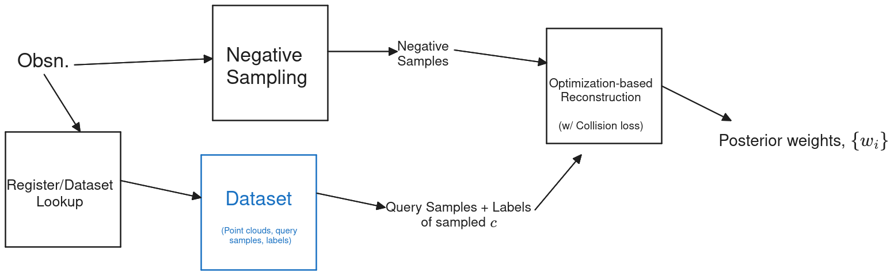
The things that I wrote down to do this week were the following:
I tried to do all of these things in this write-up.
Last time, I gave a mathematical argument/justification for the dataset-lookup approach we are doing. The general approximation I proposed was (where c is object and transform, S is negative samples, D is “detection result”): P(w | S, D) = \frac{P(S | w)}{P(S)} \cdot \mathbb E_{c \sim P(c | D)} \left[ P(w | c) \right] Where we approximate: \mathbb E_{c \sim P(c | D)} \left[ P(w | c) \right] \approx \frac{1}{K} \sum_k P(w | c_k) There are two parts for how our dataset-lookup as a prior factors into this aproach. (1) Our “lookup” is viewed as sampling from P(c|D); (2) Our prior takes the form of a mixture of P(w | c_k) for each sampled c_k. In this section we focus on part 2.
Also last time, I proposed using stored negative samples to function as the prior. The idea is that we would first register a stored point cloud to the observation, then, we would retrieve the negative samples and transform them similarly and use them to construct our prior. Here is the image from last time:
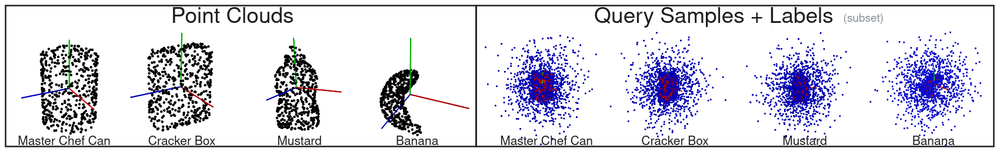
If we have retrieved negative samples for different objects, \{(x_{i,o_1}, y_{i, o_1})\}, ..., \{(x_{i,o_K}, y_{i, o_K})\} (o_k is object k retrieved from dataset), then we can define our prior as a mixture of the object samples: \sum_k P(w | c_k) = \sum_k \prod_i \sigma(y_{i, o_k} \phi(x_{i, o_k})^\top w) Where y_{i, o_k} \in \{-1, 1\}. During optimization, we would use the log of the above defined “prior”. Of course, because these are negative samples, we could also think of these in terms of a bunch of likelihoods, P(y_{i, o_k} | x_{i, o_k}, w) =: P(Q | w). Is there a way to unify these two phrasings of the prior?
Consider Q denotes a set of query points and labels retrieved: P(w | c) = \int_\mathcal{Q} P(Q | c) P(w | Q, c) dQ = \mathbb E_Q[P(w | Q, c)] Then if knowing Q removes dependence on c, P(w | c) = \mathbb E_Q[P(w | Q)] = \mathbb E_Q\left[\frac{P(Q | w) P(w)}{P(Q)}\right] However, I don’t know if this is a very clean way to get to our prior definition.
Question: Should the prior definition be pitched as an approximation to a KDE or is there some sort of derivation that would make more sense?
Here is the approach for this experiment: I first register in batch starting with 32 random \text{SIM}(3) poses. I take the best and use that pose as the ground truth one. Then I retrieve pre computed query negative samples that correspond to the transform. I build a Hilbert map [2] by training a classifier using Adam [3] over both query samples and observed negative samples. I only weight the query samples as 0.01 of the observed negative samples. Here is a graphic to help understand the different parts of the process visually:
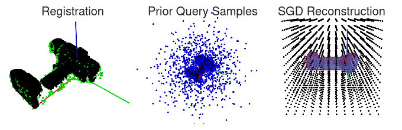
Next, I qualitatively show what happens to recontruction with a really bad prior. Here is the figure for that:
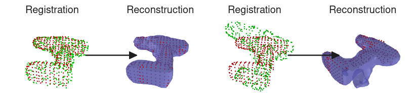
Notice that the reconstruction is good when the prior is good, but struggles with the poor prior. While this harms the reconstruction, I believe that some observational negative sampling parameters make it worse than it needs to be. I beleive that reconstruction can be better with different hyperparameters even when the prior is poor.
Next is an experiment of varying the pose and keeping track of the IoU with the ground truth mesh. Here is a line graph that shows how IoU deteriorates:
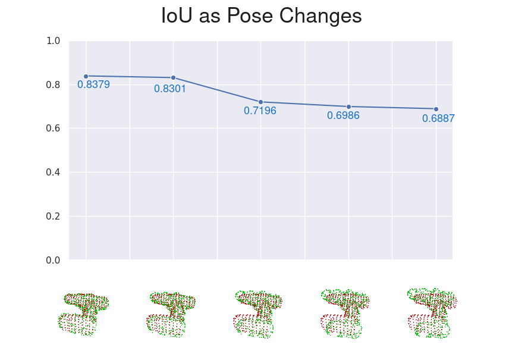
As you can see, as the pose gets worse, the IoU metric also gets worse. It should be noted that there is a significant drop between the second and third value. A similar phenomena can be observed with chamfer distance, but it is not graphed. Here are the values (in the same order as above graph): [0.005152, 0.005946, 0.008029, 0.008816, 0.009553]. These values are in meters and lower is better.
I also wanted to make sure that I am not “overfitting” to the drill; so here is the IoU deterioration for the cracker box:
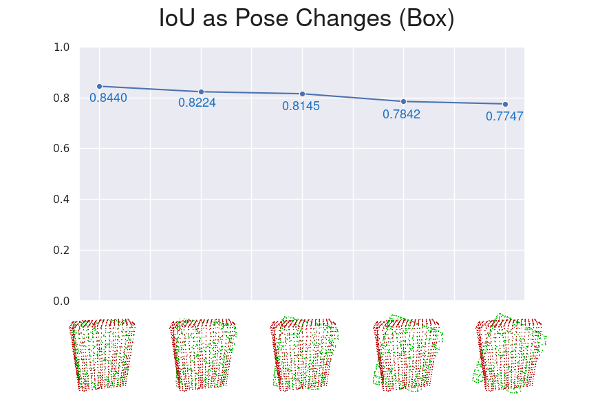
FYI, the chamfer distances again showed an upwards trend, similar to the drill. The specific values were (in meters): [0.007707, 0.008411, 0.009738, 0.010934, 0.011691]
Here are the hyperparameters for these experiments:
| Parameter | Value |
|---|---|
| registr. batch_size | 64 |
| registr. lr | 0.01 |
| registr. epochs | 8 |
| \lambda_\text{prior} | 0.01 |
| recon. batch size | 128 |
| recon. lr | 0.1 |
| recon epochs | 20 |
| # of hinge points | 1728 |
Note: One thing that I realized with the new way we are doing the prior is that it is agnostic of hinge point placement; this means we can do a similar trick to V-PRISM where we place hinge points on the surface for increased accuracy there.
Here is a GIF of doing SIM(3) registration with SGD ICP with 3 different results: (first) failure; (middle) almost right; (last) best registration:
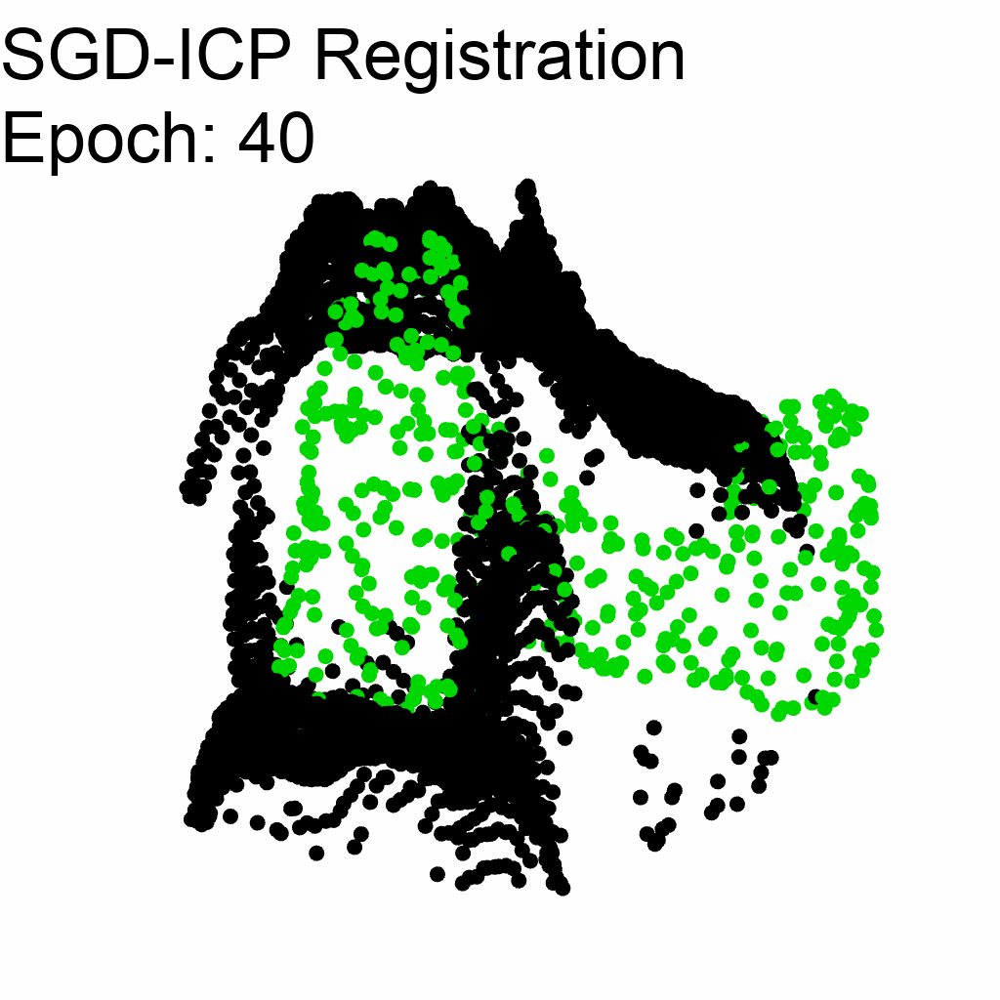 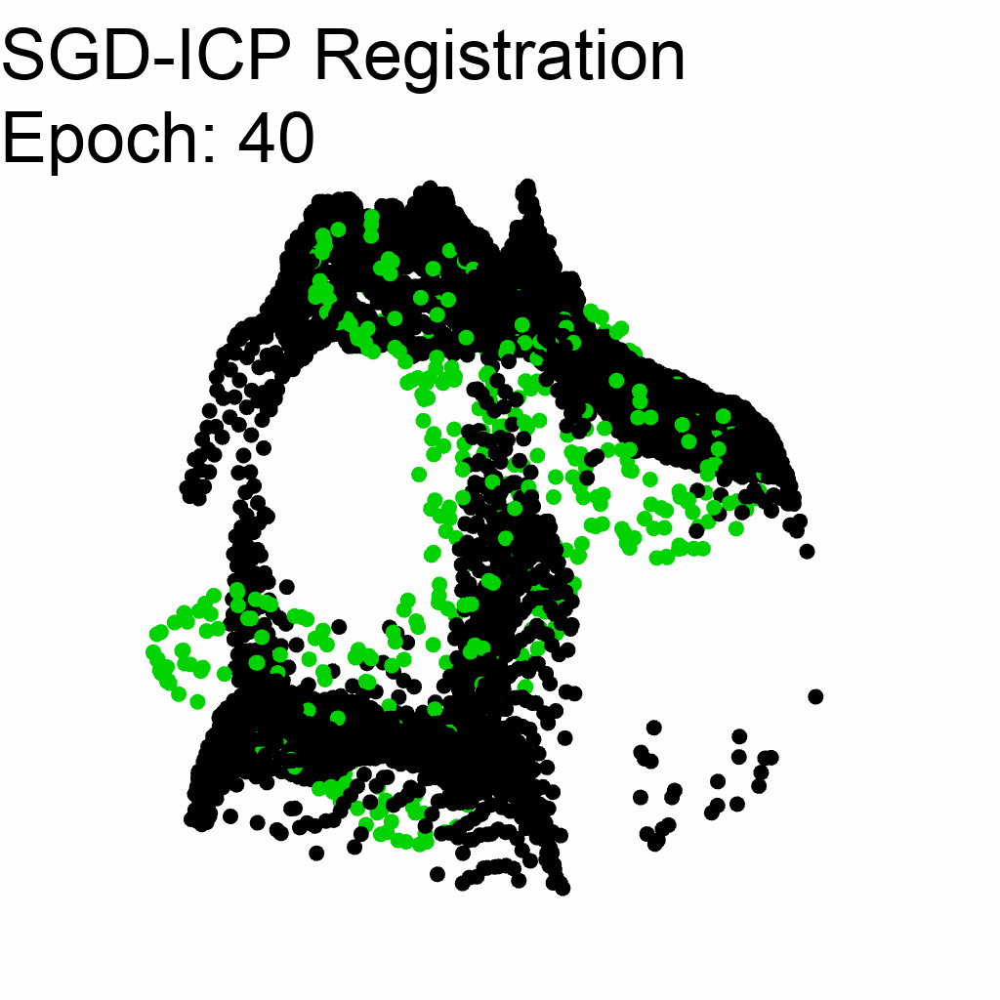 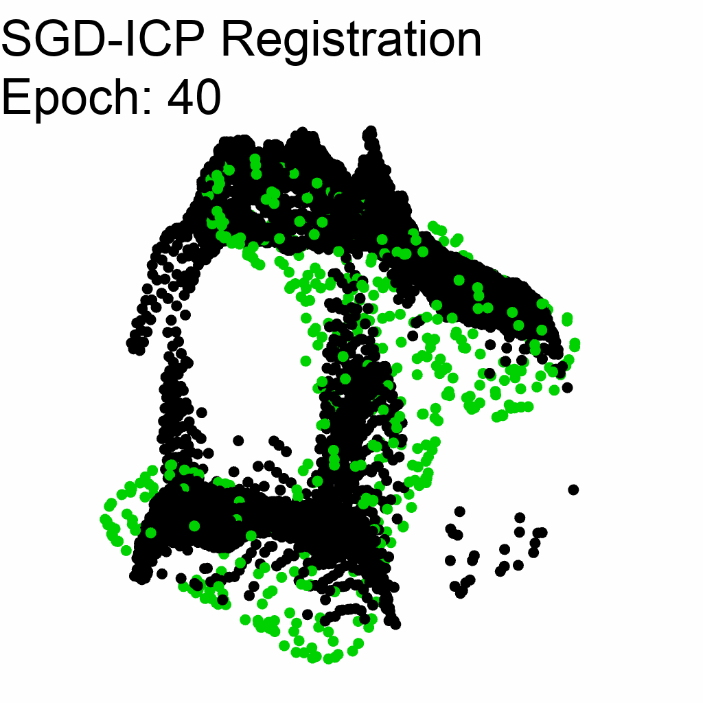
For this registration, I used L1 loss, started with an initial random pose in \text{SIM}(3), but optimized a perturbation to the pose in the Lie algebra \mathfrak{sim}(3) using PyPose [4]. In order to avoid the scale parameter from blowing up, I included a regularization term that penalizes the squared log of the scale. Batch size was 64 points in the observed point cloud. The last GIF had a final loss of 0.06143.
Next, I try registering to the banana. I want to make sure that (1) the banana registers poorly to the drill observation and (2) the banana registers well to the banana observation. Here are the GIFs:
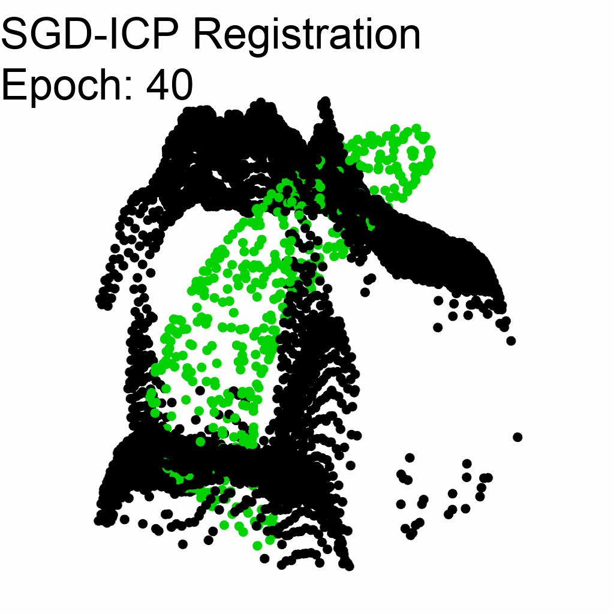 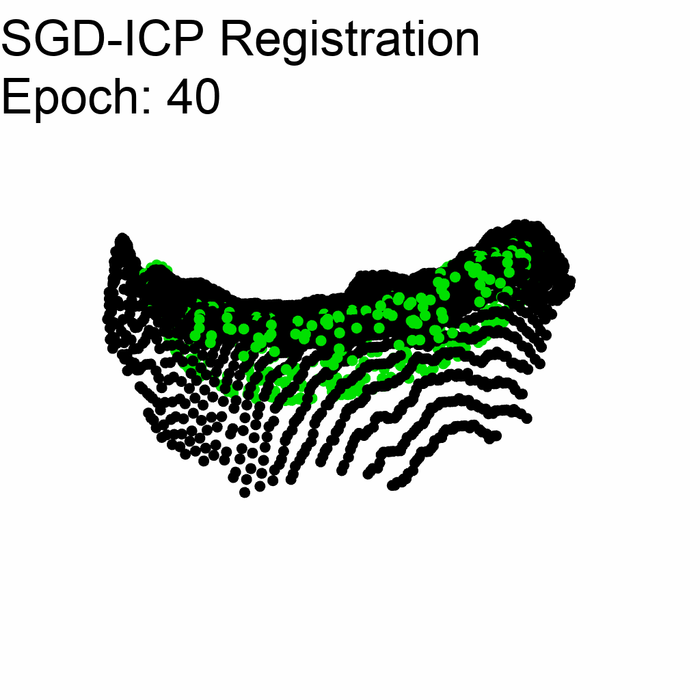
The banana-to-drill registration had a final loss of 0.1773, significantly higher than drill-to-drill best registration. It should be noted that in the banana-to-banana registration GIF, I increased the step size from 0.001 to 0.005. This suggests it could be increased more and have less epochs.
Question: How does this look; do we still think that color is necessary?
As far as robustness, if we want to do better, there is a paper I found, [5], proposing a new robust loss for point cloud to point cloud registration. They showed improvement over chamfer distance as a loss metric in presence of outliers. I haven’t dug into it, but it might be something to keep in the back of our minds.
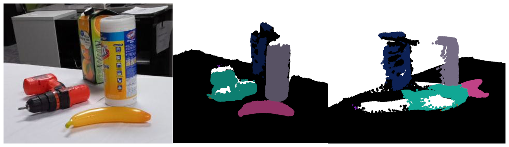
Over the weekend, I would like to try running the full method on this kinect scene. The things that might still need work are:
Right now my plan is to have the following steps
1. get_observation
2. register_all_objects
3. retrieve_best_transformed_query_samples
4. run_opt_based_hm_reconstructionI have compiled a list of potential PhD labs that I am considering applying to (in no particular order):
| Faculty | Lab | University |
|---|---|---|
| Tucker Hermans | LL4MA Lab | U of U |
| Deiter Fox | Robotics and State Estimation Lab | UW |
| Byron Boots | Robot Learning Lab | UW |
| Matthew Johnson-Roberson | DROP Lab | CMU |
| Nadia Figueroa | Figueroa Robotics Lab | U Penn |
| Michael Posa | DAIR Lab | U Penn |
| Roberto Martín-Martín | RobIn Robot Interactive Intelligence Lab | UT Austin |
| Lerrel Pinto | GRAIL | NYU |
| Nikolay Atanasov | Existential Robotics Lab | UCSD |
| Kris Hauser | Intelligent Motion Lab | UIUC |
| Russ Tedrake | Robot Locomotion Group | MIT |
Here are the list of 9 universities represented in the above table:
*: Preference school
This list is not final, and I’m definitely still researching other groups to see who is out there. If there is a place that you think I should look into, I’m all ears.
As far as application materials, I know that I need to have statements similar to the NSF-GRFP application. Here are my final drafts that I submitted FYI:
Question: Should my research statement for grad school take a different angle than my NSF-GRFP one?
Question: Do I need to take the GRE?
Next week, I have a few goals: